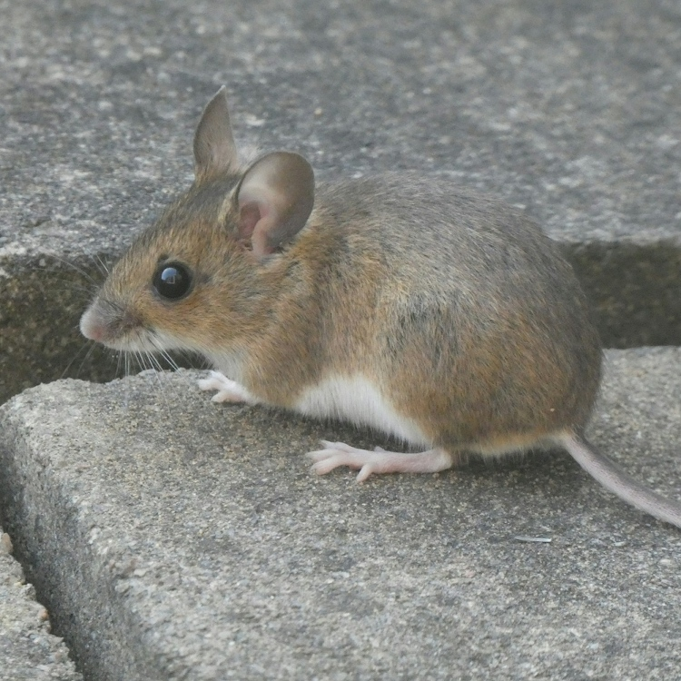

flowchart LR
Rein@{shape: circle} --> Leben@{shape: circ, label: "Leben"}
Leben --> Raus@{shape: circle}
style Rein fill:#F4F4E7,stroke:#F4F4E7;
style Leben stroke:#F4F4E7;
style Raus fill:#F4F4E7,stroke:#F4F4E7;
\gdef\sub#1{_{\mathrm{#1}}} \gdef\unit#1{\mathrm{#1}} \gdef\celsius{\unit{°C}} \gdef\joule{\unit{J}} \gdef\kelvin{\unit{K}} \gdef\kilogram{\unit{kg}} \gdef\liter{\unit{L}} \gdef\milliliter{\unit{mL}} \gdef\meter{\unit{m}} \gdef\mole{\unit{mol}} \gdef\newton{\unit{N}} \gdef\pascal{\unit{Pa}} \gdef\squaremeter{\meter^2} \gdef\cubicmeter{\meter^3} \gdef\newtonperkilogram{\frac{\newton}{\kilogram}} \gdef\joulepermole{\frac{\joule}{\mole}} \gdef\jouleperkilogram{\frac{\joule}{\kilogram}} \gdef\jouleperkelvin{\frac{\joule}{\kelvin}} \gdef\jouleperkilogramperkelvin{\frac{\joule}{\kilogram\,\kelvin}} \gdef\joulepermoleperkelvin{\frac{\joule}{\mole\,\kelvin}}
1 Was ist Leben?
Lebendiges unterscheidet sich vom Unlebendigen. Wir Menschen können im Alltäglichen ohne weiteres zwischen Lebendigem und Unlebendigem unterscheiden. Unsere Sinne täuschen uns selten aber bedeutet das, dass wir wirklich tiefgreifend wissen was Leben heißt?


1.1 Definition oder Implikation?
Scheinbar Unlebendiges entpuppt sich manchmal als Leben und umgekehrt. Deshalb hat die Biologie und andere Wissenschaften über die Zeit eine Vorstellung vom Leben entwickelt, die praktische als auch theoretische Arbeit ermöglicht, ohne in ergebnislosen und nicht endenden philosophischen Diskussionen abzugleiten. Es ist nicht die einzige mögliche Vorstellung des Lebens aber eine für Naturwissenschaften recht greifbare.
Es gibt keine Definition von Leben, die das Wort oder die Bedeutung aufklärt. Vielmehr ist die Vorstellung vom Leben eine Implikation. Eine Implikation funktioniert so: wenn eine Bedingung erfüllt ist, dann ist die Schlussfolgerung richtig. Für das Leben heißt das: wenn alle Kennzeichen des Lebens erfüllt werden, dann können wir etwas als Leben bezeichnen.
1.2 Elevator pitch
Diesen Abschnitte solltet ihr im Schlaf wiedergeben können.
Leben ist eine Organisationsform von Materie. Diese gewinnt durch den Metabolismus Baustoffe und Energie für die meisten Lebensprozesse. Dabei operiert das Leben im Fliessgleichgewicht. Damit der Metabolismus möglichst effizient abläuft, schützt sich das Leben durch eine Membran. Dadurch ist die kleinste Einheit des Lebens eine von einer Membran umhüllten Zelle. Die Zelle hält die inneren Bedingungen durch Homöostase aufrecht. Das Verhalten dient der Interaktion mit der Umwelt und anderen Lebewesen. Es stellt ebenfalls sicher, dass die inneren Lebensvorgänge möglichst störungsfrei ablaufen. Darunter fällt auch die Reproduktion, die die Weitergabe der genetischen Information ermöglicht. Bei der Reproduktion muß es Wachstum geben damit genügend Biomasse an die Tochterwesen vererbt und die genetische Information weitergegeben werden kann. Das Leben passt sich auf eine individuelle Art und durch Evolution an.
Im den folgenden Abschnitten gehen wir auf einige Details der Kennzeichen des Lebens ein.
2 Stoffwechsel und Gleichgewicht
Alle Lebewesen müssen etwas von außerhalb ihres eigenen Körpers aufnehmen und geben etwas ab. Was hinein geht wird irgendwie in das was hinaus geht umgewandelt.
Dieser Prozess heißt Stoffwechsel oder Metabolismus. Aber was geht denn hinein? Was ist das Mindeste was jedes Lebewesen braucht?
2.1 Was brauchen wir wirklich?
Überlegen wir, was wir zu uns nehmen in der Reihenfolge der Wichtigkeit für das Überleben:
- Luft
- Wasser
- Nahrung
Alle oben genannten Dinge sind Mischungen aus Stoffen und Elementen. Aus diesen wird nur ein Teil dem Metabolismus zugeführt.
Aus der Luft benötigen wir den Sauerstoff \ce{O2} zur Energiegewinnung. Aber die übrigen Bestandteile wie Stickstoff \ce{N2} oder Argon \ce{Ar} atmen wir unverändert aus. Das Wasser, dass wir durstig in uns hinein schütten, kommt in der gleichen Form wieder aus uns heraus. Wasser beteiligt sich nur minimal am Metabolismus. Jetzt bleibt noch die Nahrung übrig. Hier sieht es schon anders aus. Wir nehmen aus der Nahrung nur die Bestandteile auf, die einen oder mehrere der folgenden Verwendungszwecke haben:
- Energiegewinnung,
- Baustoff,
- Essentiell für den Metabolismus.
Die Stoffe, die wir aus der Nahrung extrahieren heißen Nährstoffe. Die essentiellen Nährstoffe; das sind diejenigen Nährstoffe, die unser Körper nicht selbst synthetisieren kann. Der Begriff Nährstoff ist jedoch etwas ungenau. Zum Beispiel gelten einige Ionen1 als Makronährstoffe und Mikronährstoffe, obwohl sie nicht durch den Stoffwechsel verändern sondern nur teilnehmen.
Alle Pflanzen, alle pflanzenartigen und alle pflanzenähnlichen Organismen synthetisieren ihre eigene Nahrung durch die Photosynthese. Sie synthetisieren allerdings nur den Teil, der zur Energiegewinnung und als Baustoff genutzt wird. Die essentiellen Nährstoffe wie Ionen werden aus der Erde durch Wurzeln oder andere Organe aufgenommen.
2.2 Was passiert damit?
Luft enthält verschiedene Gase, die zuerst alle innerhalb des Organismus als gelöste Gase vorliegen. Jedoch wird nur \ce{O2} für den Metabolismus gebraucht. Höheres Leben besitzt für \ce{O2} spezifische Transportmechanismen, die es überall verteilen wo es gebraucht wird.
Wasser ist das Lösemittel des Lebens. Alles spielt sich im Wasser ab und fast alle Bestandteile des Lebens sind wasserlöslich. Das liegt daran, dass das Leben im Wasser entstanden ist. Alle Einzeller und alle höheren Lebewesen verfügen über ein Pool an innerem Wasser.
Nur die einfachsten Organismen wie Bakterien nehmen Nahrung in molekularer Form auf. Wenn Du eine gekochte Kartoffel isst, wird sie kaum in dieser Form durch deinen Körper und deinem Blut transportiert. Alle höheren Lebewesen müssen aufgenommene Nahrung zuerst mechanisch zerkleinern. Danach werden die kleinen Bruchstücke chemisch zerlegt. Das erledigen Enzyme; winzige Maschinen, die die Nahrung in immer kleinere Moleküle spalten. Schließlich werden die kleinsten wasserlöslichen Moleküle innerhalb des Organismus verteilt.
flowchart LR
classDef icon shape:rounded,fill:#F4F4E7,stroke:#F4F4E7,font-size:28px;
classDef text shape:rounded,fill:#F4F4E7,stroke:#F4F4E7;
classDef empty height:0,width:0;
air(fa:fa-wind):::icon
h20(fa:fa-water):::icon
food(fa:fa-pizza-slice):::icon
air --> gases
h20 --> h20pool
food --> blocks
subgraph life [Leben]
gases(Gelöste<br>Gase):::text
h20pool(Inneres<br>Wasser):::text
blocks(Nährstoffe):::text
metabol[Metabolismus]@{shape: circle}
struct[Struktur<br>&<br>Prozesse]@{shape: rounded}
gases -->|"$$\text{O}_2$$"| metabol -->|"$$\text{CO}_2$$"| gases
h20pool -->|wenig| metabol -->|wenig| h20pool
blocks --> metabol --> struct
end
waste(fa:fa-toilet-paper):::icon
gases --> air
h20pool --> h20
metabol --> waste
style air fill:#F4F4E7, stroke:#F4F4E7;
style gases fill:#E1E1D5, stroke:#E1E1D5;
style h20 fill:#F4F4E7, stroke:#F4F4E7;
style h20pool fill:#E1E1D5, stroke:#E1E1D5;
style food fill:#F4F4E7, stroke:#F4F4E7;
style blocks fill:#E1E1D5, stroke:#E1E1D5;
style waste fill:#F4F4E7, stroke:#F4F4E7;
style life rx:10, ry:10, fill:#E1E1D5, stroke:#E1E1D5;
2.3 Metabolismus - Motor des Lebens
Das Leben zerkleinert die Nahrung bis sie in kleinste Moleküle vorliegt. Das ist so also würdest Du ein Glass kaputtschlagen und immer weiter zerkleinern bis Du nur noch Glasspulver vor Dir hast.
Dann aber schafft das Leben aus diesen kleinsten Bestandteilen Großes: molekulare Maschinen, Informationsspeicher, Kraftwerke, Zellen, Gewebe, Knochen, Haut, ganze Organismen, den Amazonasregenwald, usw. Aber warte; das ist ja so, als ob sich das Glaspulver wieder zum Glas zusammensetzen würde. Und Du weißt, das ist unmöglich. Es war lange Zeit unerklärlich, wie das Leben das fertigbringt.
flowchart LR
classDef icon shape:rounded,fill:#F4F4E7,stroke:#F4F4E7,font-size:24px;
classDef text shape:rounded,fill:#F4F4E7,stroke:#F4F4E7;
classDef empty height:0,width:0;
circ[fa:fa-pizza-slice]:::icon
3small[fa:fa-ellipsis-vertical fa:fa-ellipsis-vertical fa:fa-ellipsis-vertical]:::icon
kat1[ ]:::empty
1small1[fa:fa-ellipsis-vertical]:::icon
1small2[fa:fa-ellipsis-vertical]:::icon
1small3[fa:fa-ellipsis-vertical]:::icon
ana[ ]:::empty
bone[fa:fa-bone]:::icon
circ --> 3small
3small --- kat1
kat1 --> 1small1
kat1 --> 1small2
kat1 --> 1small3
1small1 --- ana
1small2 --- ana
1small3 --- ana
ana --> bone
Der Metabolismus besitzt zwei Seiten. Der chemische Abbau von Allem in kleinste Bestandteile wird Katabolismus genannt. Er ist zum Beispiel dafür verantwortlich, dass Glucose (\ce{C6H12O6}) in noch kleinere Bestandteile zerlegt wird nach der Gleichung
\ce{C6H12O6 + 6O2 -> 6CO2 + 6H2O} + E.
Und wie bei einer echten Verbrennung wird hier eine bestimmte Form von Energie E freigesetzt. Diese wird jedoch nicht auf einen Schlag frei sondern in kleinere Portionen. Das ermöglicht die Speicherung sieser Energie und vor allem eine feine Kontrolle des Prozesses.
Der Anabolismus ist der aufbauende Teil des Metabolismus. Aus kleinsten Bestandteilen schafft das Leben viel größere Strukturen; so groß, dass viele ohne Miksroskop sichtbar werden. Dafür wird Energie gebraucht.
Der Motor des Lebens ist die Verbindung zwischen Katabolismus und Anabolismus. Das Leben hat es also geschafft, die zerstörerische Kraft des Abbaus für den Aufbau nutzbar zu machen.
flowchart LR
classDef icon shape:rounded,fill:#F4F4E7,stroke:#F4F4E7,font-size:30px;
classDef text shape:rounded,fill:#F4F4E7,stroke:#F4F4E7;
classDef empty height:0,width:0;
circ[fa:fa-pizza-slice]:::icon
3small[fa:fa-ellipsis-vertical fa:fa-ellipsis-vertical fa:fa-ellipsis-vertical]:::icon
kat1[ ]:::empty
1small1[fa:fa-ellipsis-vertical]:::icon
1small2[fa:fa-ellipsis-vertical]:::icon
1small3[fa:fa-ellipsis-vertical]:::icon
ana[ ]:::empty
bone[fa:fa-bone]:::icon
square[fa:fa-cubes]:::icon
kat2[ ]:::empty
2small["$$\text{CO}_2 + \text{H}_2\text{O}$$"]:::text
circ --> 3small
3small --- kat1
kat1 --> 1small1
kat1 --> 1small2
kat1 --> 1small3
1small1 --- ana
1small2 --- ana
1small3 --- ana
ana --> bone
square --- kat2
kat2 --> 2small
kat2 -->|$$E$$| ana
2.4 Fliessgleichgewicht
Ein einfaches Beispiel für ein Fliessgleichgewicht ist ein Waschbecken bei dem der Wasserhahn ständig läuft und der Abfluss nur halb geschlossen ist. Das Waschbecken füllt sich bis zu einer gewissen Höhe mit Wasser. Danach wird der Druck so groß, dass genauso viel Wasser aus dem Abfluss läuft wie aus dem Wasserhahn nachkommt.
In Abbildung 3 wird sehr deutlich, warum der Stoffwechsel in einem Fliessgleichgewicht abläuft. Der Metabolismus und andere Lebensvorgänge benötigen einen ständigen Einstrom von Stoffen und Elementen. Gleichzeitig müssen alle Abfallstoffe aus dem inneren Bereich nach außen geschafft werden, weil sie ansonsten die Lebensmaschine stören. Das Einstellen eines Gleichgewichts des Lebens mit einer Umgebung bedeutet Tod.
3 Homöostase und Abgrenzung
Damit der Metabolismus unter optimalen Bedingungen ablaufen kann, muss er vor äußeren, störenden Einflüssen geschützt werden. Das Leben muss sich von der unbelebten Welt trennen.
flowchart LR
classDef icon shape:rounded,fill:#F4F4E7,stroke:#F4F4E7,font-size:30px;
classDef text shape:rounded,fill:#F4F4E7,stroke:#F4F4E7;
classDef empty height:0,width:0;
Rein2(Rein):::text --> Leben2((Leben))
Leben2 --> Raus2(Raus):::text
Diese Abgrenzung ist für einzelne Zellen die Zellmembran, die aus Lipiden besteht. Lipide sind Fette und fettähnliche Stoffe. Diese Moleküle besitzen zwei Eigenschaften die räumlich getrennt sind: auf der einen Seite lieben sie Wasser und auf der anderen mögen sie es gar nicht. Dadurch orientieren sich Fette so, dass ihre wasserabweisenden Enden zusammenrücken. Nach außen befinden sich die wasserliebenden Enden. Bei einer Memrban kommen so zwei Molekülschichten zusammen, die im Inneren die wasserabweisenden Bereiche einschließen. Das stellt im Grunde genommen eine zweidimensionale Flüssigkeit dar.
Die Abgrenzung von der Umgebung ermöglicht einige wichtige Funktionen:
- Zusammenhalt: ohne Abgrenzung gehen alle Nährstoffe und Bestandteile des Lebens in allen Himmelsrichtungen verloren.
- Homöostase: ist die Aufrechterhaltung der inneren Bedingungen durch Kontrollmechanismen. Sie ist notwendig, weil die meisten Lebensvorgänge sehr abhängig von physikalischen und chemischen Faktoren wie Temperatur, Salzgehalt, Säuregehalt und andere Faktoren sind.
4 Verhalten
Das Leben zeigt typische Reaktionen auf Belebtes und Unbelebtes. Die Gesamtheit dieser Reaktionen nennen wir Verhalten.
In den allereinfachsten Fällen ist Verhalten die sichtbare Äußerung der Homöostase. Wenn die Homöostase es nicht mehr schafft die inneren Bedingungen zu kontrollieren, dann muß das Leben mit Bewegung, Suche, Flucht, Verfärbung, Wachstum, oder anderen Prozessen reagieren.
Im positiven Sinn kann jedoch Verhalten auch zu einer Verbessung der inneren Bedingungen führen. Die Jagd greift bei vielen Tieren als Verhalten ein, wenn der Hunger kommt.
flowchart TD
Bolt1@{shape: bolt} --> Da@{shape: circ, label: "Leben"}
Bolt2@{shape: bolt} --> Weg@{shape: circ, label: "...ist weg"}
style Weg fill:#F4F4E7,stroke:#F4F4E7;
Verhalten ist auf Sensoren angewiesen, die Reize aufnehmen und sie mithilfe von Informationsverarbeitung in eine entsprechende Reizreaktion umwandelt. Die Informationsverarbeitung erfolgt bei einfachem Leben auf molekularer Ebene. Höhere Organismen besitzen komplexe Systeme, die über größere Entfernung wirken; z.B. das Nervensystem.
Reize sind diejenigen äußeren Faktoren, die durch geeignete Rezeptoren2 registriert werden. Die Farbe Rot ist für uns höhere Primaten3 ein Reiz, jedoch nicht für viele andere Säugetiere wie zum Beispiel den Hund. Rotes Licht existiert physikalisch unabhängig vom Leben aber es spielt als Reiz nur für wenige Tiere eine Rolle, die die geeigneten Rezeptoren besitzen.
Verhalten hilft über diese einfache Funktionen auch in anderen Bereichen. Zum Beispiel ist das Auffinden eines Paarungspartners bei der sexuellen Fortpflanzung ein Prozess, der ebenfalls vom Verhalten gesteuert werden kann. Das ist wiederum ein Ausdruck der inneren Lebensprozesse eines Organismus, der die genetische Information weitergeben will.
5 Bauplan und Funktionsplan
Bisher haben wir bereits eine sehenswerte Menge von Lebensprozessen kennengelernt. Dazu kommt noch das Sichtbare eines Organismus: Größe, Anzahl der Beine, Farbe, Haare oder Nägel, Flügel, usw. Wie das Leben aussieht und funktioniert kann nicht vom Himmel fallen. Irgendwo muss festgehalten sein, wie das Leben das alles bewältigen kann. Und wenn aus Leben neues Leben entsteht, muss das neue Leben wissen wie es aussehen und funktionieren soll. Diese information wird als genetische Information bezeichnet.
flowchart LR
Groß((Ich bin gewachsen)) -.-x Klein1(Klein)
Groß --> Klein2((Klein))
Die Art und Weise wie die genetische Information gespeichert und weitergegeben wird, steht nach neuestem Erkenntnissen am Anfang des Lebens auf unserem Planeten. Die genetische Information wird in unglaublich lange lineare Moleküle kodiert4, die aus DNA5 bestehen. In Bakterien befindet sie sich lose innerhalb der Zelle; bei höheren Organismen liegt die DNA in einer hochkompimierten Form in einem Zellkern vor.
6 Reproduktion und Vermehrung
Aus Lebendigem entsteht Lebendiges. Dieser Vorgang heißt Reproduktion und ist einer der ätesten und kompliziertesten Vorgänge des Lebendigen. Reproduktion heißt, dass etwas was es bereits gibt wieder hergestellt wird. Eine Vermehrung tritt dann ein, wenn die Anzahl der Nachkommen die Anzahl der Erzeuger übersteigt.
flowchart LR
Groß((Ich bin gewachsen)) --> Klein1((Klein))
Groß --> Klein2((Klein))
flowchart LR
Groß1((Ich bin gewachsen)) --> Klein((Klein))
Groß1 --> Groß2((Immer noch groß))
Gleichgültig, ob die Reproduktion ungeschlechtlich oder geschlechtlich stattfindet, diese fundamentale Eigenschaft ist so alt wie die Anfänge des Lebens als die Erde noch eine Hölle war. Während dieser Zeit waren Lebewesen sehr einfach aufgebaut. Das heißt, unabhängig von allen philosophischen Gedanken, die sich der Mensch macht, dass die gesamten Struktur und Prozesse des Lebens einzig und alleine darauf abzielen, den Bau- und Funktionsplan des Lebens weiterzugeben. Das ist eine fundamentale Tatsache der Biologie.
7 Wachstum
Alles was lebendig ist muss wachsen. Das ist schon dadurch notwendig, da der Bau- und Funktionsplan des Lebens zumindest einmal kopiiert werden muss, damit der Tochterorganismus es erbt. Die DNA in ihrer hochkomprimierten Form stellt bereits einen erheblichen Masseanteil eines Organismus dar. Aber das trifft auch auf andere zellulären Strukturen zu wie das Zellskelett, die Mitochondrien, Vakuolen, usw.
flowchart LR
Klein((Klein)) --> Groß((Ich bin gewachsen))
Beim Wachstum wird ein Teil der Nährstoffe verwendet, um einerseits Struktur aufzubauen und andererseits, um die notwendige Energie bereitzustellen. Wenn Wachstum eintritt, ist der Anabolismus stärker als der Katabolismus. Das heißt, dass der aufbauende Stoffwechsel verstärkt wird und dass damit sich die Energiereserven des Organismus verkleinern.
8 Kurzfristige und langfristige Anpassung
Das Leben versucht, sich immer anzupassen. Das Leben findet einen Weg. Die Anpassung des Lebens an Veränderung kennt zwei Geschwindigkeiten.
Die schnelle Anpassung beruht auf den Möglichkeiten, die der Bau- und Funktionsplan bietet. Das heißt, durch Regulation und Kontrolle hat das Leben Möglichkeiten, sich an kurzfristige Änderungen anzupassen. Dabei reagieren Lebewesen auf eine Veränderung nur solange wie diese wirkt. Ganz wichtig ist die Tatsache, dass diese Art der Anpassung individuell ist.
flowchart LR
Anfang1((Leben)) --> Ende1@{shape: circ, label: "Leben"}
Anfang2((Leben)) --> Zwischen2@{shape: circ, label: "... ... ... ... ..."} --> Ende2@{shape: rounded, label: "Leben"}
style Ende1 fill:#F4F4FF;
style Zwischen2 fill:#F4F4E7,stroke:#F4F4E7;
style Ende2 fill:#F4F4FF;
Die langsame Anpassung beruht darauf, dass eine Population von Lebewesen sich über die Zeit verändert. Dabei wird der Bau- und Funktionsplan in zufälliger Richtung verändert. Die Auswahl der angepassten Individuen geschieht praktisch von selbst. Erfolgreiche Individuen haben nämlich eine größere Chance, durchschnittlich mehr Nachkommen zu produzieren als nicht angepasste Individuen. Dieser Vorgang heißt Evolution und die Art der Anpassung Adaptation.
Fußnoten
Ionen sind positive geladene Atomkerne. In biologischen Systemen liegen Ionen immer in wässriger Phase vor. Zum Beispiel würde das zweifach positive geladene Magnesium als \ce{Mg^2+ (aq)} geschrieben werden.↩︎
Rezeptoren sind biologische Sensoren. Das Wort Sensor ist nur für künstliche und technische Systeme vorbehalten. Wie alle Sensoren, stellen Rezeptoren Signaltransducer dar. Ein Signaltransducer übersetzt ein ankommendes Signal in eine andere physikalische Form um. Das Auge setzt übersetzt elektromagnetische Strahlung in elektrochemische Impulse um. Ein digitaler Kamerasensor setzt elektromagnetische Strahlung in elektrisch digitale Signale um.↩︎
Primaten sind eine Säugetiergruppe, die im Laufe der Evolution relativ große Gehirne auf Kosten des Geruchsinns entwickelt haben. Dazu gehören alle primitiven und höheren Affen als auch der Mensch.↩︎
Zum Beipiel ist die Gesamtlänge der männlichen menschlichen DNA 2.05 m; bei Frauen erreicht sie über 2.08 m. Trotz dieser beachtlichen Länge, wird die Information innerhalb eines mikroslopischen Bereichs komprimiert.↩︎
Desoxyribonucleic acid ist das englische Wort für die Desoxyribonukleinsäure, oder DNS auf deutsch.↩︎